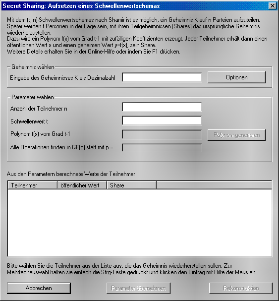
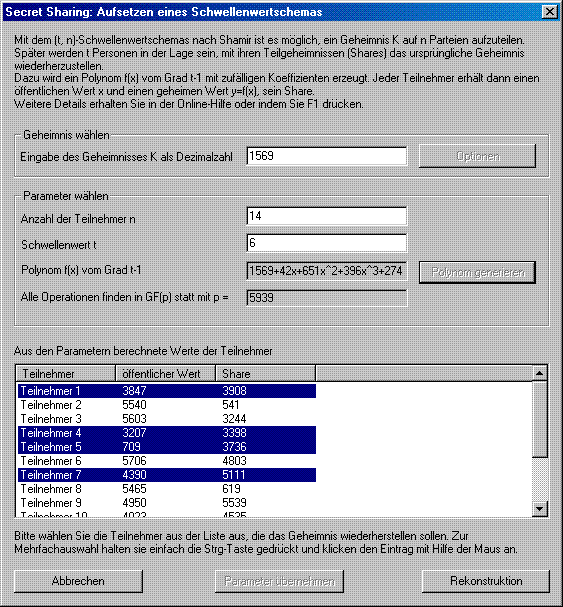

This dialogue can be achieved via the menu Individual Procedures \ Secret-Sharing-Demo.
This dialogue demonstrates the (t, n) threshold scheme invented by Adi Shamir. It offers possibilities to freely choose the necessary parameters and to select those participants who want to cooperate in reconstructing the secret.

First of all, you have to enter your secret K as a decimal within the group box labeled "Choose your secret". You can call a dialogue to change the limit to the number of participants by clicking the button "Options" as well.
Right in the middle of the dialogue all parameters that are neccessarily needed to setup a Shamir scheme can be entered. In detail, you have to fix the number of participants n that take part in your scheme and your threshold t. By clicking the button "Generate polynomial", CrypTool (as the dealer of the scheme) generates at random a prime p that determines the field in which all calculations take place. In addition, a polynomial of degree t-1 and with randomly chosen coefficients is constructed.
If you now accept these parameters, the list control displays all participants. CrypTool has randomly chosen a public value x from GF(p) for each of the participants. Furthermore, the polynomial has been evaluated for all these values. Consequently, you are presented a list of all participants and their shares.
A group of participants can be selected by pressing the Ctrl key and using your mouse to mark the desired items.

If you wish to reconstruct your secret, you have to left-click the button "Reconstruction". A new dialogue then opens to display the reconstructed secret.